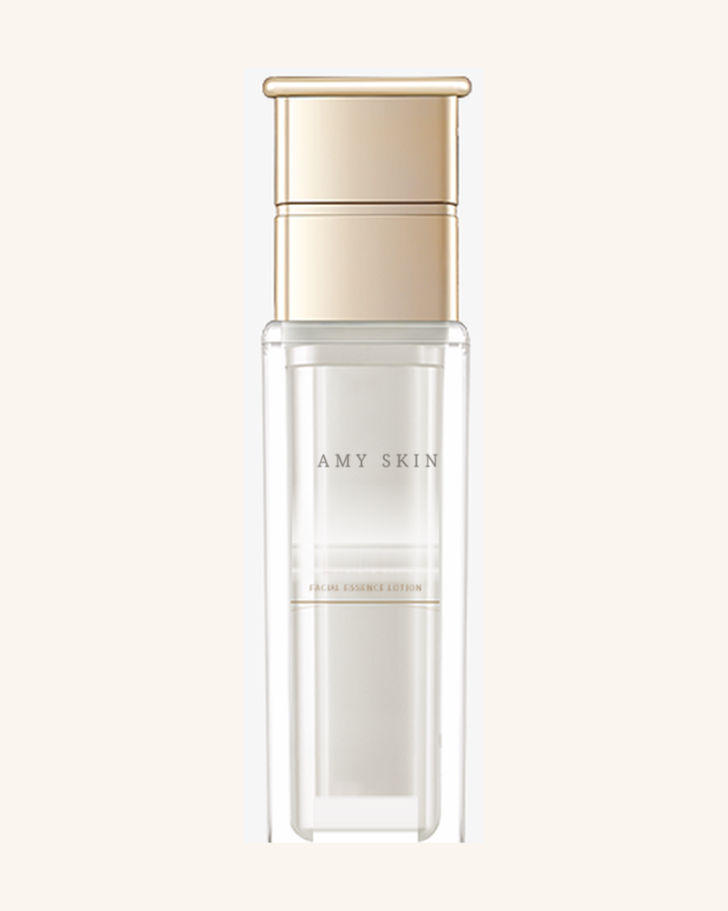

AMY SKIN
Direção escolhida: preto e dourado. Um wordmark serif refinado e marcante, uma marca gota-A em dourado champanhe e uma paleta de preto puro + dourado. Herança premium de cuidados com a pele, sem gênero, e feita para se destacar em embalagens pequenas.

Logotipo principal — marca + wordmark
Arquivo: assets/img/logo-e.svg — fundo transparente. A marca gota-A é sempre dourado champanhe #C9A86A; o wordmark é escuro — use este arquivo apenas sobre fundo claro (painéis brancos ou creme, embalagens claras). O wordmark é um logotipo desenhado sob medida, não uma fonte padrão: Letras ajustadas à mão a partir de um esqueleto serif de alto contraste — o “A” tem um ápice mais alto e afiado e uma barra transversal arqueada que ecoa a marca de gota, M / Y / S / K / I / N têm peso e proporção individuais, e cada par de letras tem kerning manual (AM, MY, SK, KI, IN). Ele é convertido em vetores — nunca o recomponha; use sempre o arquivo.
Cores — seis
Regra: o wordmark aparece apenas como wordmark escuro sobre fundo claro (arquivo assets/img/logo-e.svg) ou em branco creme #F5EFE6 (arquivo invertido assets/img/logo-e-rev.svg) sobre preto. A marca é sempre dourado champanhe #C9A86A. Nunca rosa, nunca nenhuma outra cor, nunca sobre um fundo carregado. O produto, a sua fórmula e a sua embalagem trazem a cor; o logotipo fica nestas seis.
Linha fina dourada: rgba(201,168,106,.25) — 1 px. Use-a para bordas de cartões, divisores de seção e contornos de botões sobre preto. É a única espessura de linha dourada; nunca use uma linha dourada mais grossa para divisores de corpo.
Fontes
| Uso | Fonte | Ajuste |
|---|---|---|
| Wordmark | Logotipo desenhado sob medida (esqueleto serif de alto contraste, ajustado à mão) | Maiúsculas com kerning por pares; ápice do “A” + barra transversal arqueada que ecoa a marca de gota; sublinha “SKINCARE” com espaçamento, dourado champanhe; linha fina dourada abaixo |
| Títulos do site | Cormorant Garamond, Light 300 | Caixa de frase, branco creme #F5EFE6 sobre preto |
| Texto de corpo | Arial / Helvetica, Regular 400 | Branco creme #F5EFE6, 16 px / 1.75 |
| Legendas, regras | Arial / Helvetica, Regular 400 | Secundário #B8B0A4, maiúsculas com espaçamento |
Os títulos usam Cormorant Garamond Light 300, carregada do Google Fonts; os arquivos auto-hospedados assets/fonts/cormorant-garamond-500.woff2 e -600.woff2 cobrem outros pesos em outras páginas. O wordmark nos arquivos do logotipo é desenhado sob medida e convertido em vetores, por isso é exibido de forma idêntica em todos os lugares, incluindo provas de impressão — ele nunca deve ser recomposto a partir da fonte.
Espaço livre e tamanho mínimo
Espaço livre: mantenha uma altura de maiúscula “x” vazia nos quatro lados do logotipo, onde x = a altura do “A” maiúsculo. Nada — nenhum texto, nenhuma regra, nenhuma borda de imagem — entra no espaço livre.
x = altura de maiúscula do “A” — em todos os lados
Tamanho mínimo: 20 mm de largura na impressão / 100 px de largura na tela, tanto para a variante principal quanto para a empilhada. A marca sozinha pode ser usada até 16 px (favicon, tampa de frasco). Nunca use o wordmark abaixo do tamanho mínimo.
Escala de tamanhos (digital): 

 ✕ 60 px — muito pequeno, não usar (use só a marca)
✕ 60 px — muito pequeno, não usar (use só a marca)
Horizontal, invertida, empilhada e marca
Principal — composição horizontal
Arquivo: assets/img/logo-e.svg. Marca dourada + wordmark escuro sobre fundo claro, uma só composição.
Invertida
Arquivo: assets/img/logo-e-rev.svg — Wordmark branco creme #F5EFE6, marca dourada, apenas para fundos #0A0908, embalagens escuras e caixas escuras. Nunca use o arquivo invertido sobre fundo claro.
Quando usar cada uma: use o arquivo invertido apenas sobre preto — cabeçalho e rodapé do site, áreas pretas de hero e CTA, embalagens pretas, caixas escuras. Use o arquivo principal apenas sobre fundo claro — painéis brancos ou creme, embalagens claras, impressão em papel claro. O espaço livre (uma altura de maiúscula “x” em todos os lados) e o tamanho mínimo (20 mm na impressão / 100 px na tela) são os mesmos para as duas versões.
Variante empilhada — para embalagens estreitas
Arquivo: assets/img/logo-e-narrow.svg — marca acima do wordmark, para faces de embalagem com menos de 90 mm de largura, ou seja, tubos e sachês de máscara. Em todos os outros casos, use a versão principal. Nunca comprima nem estique a versão principal para caber.
A marca sozinha


Arquivo: assets/img/mark.svg (dourada) e assets/img/mark-navy.svg (monocromática escura). A gota que se lê como um “A”. Use-a sozinha para favicon, avatares sociais, tampas de frascos e selos — em qualquer lugar onde o wordmark completo seja muito pequeno. A marca dourada é a padrão; a marca escura monocromática é apenas para impressão monocromática sobre fundo claro — nunca sobre preto.
Faça: uma só composição · mantenha o espaço livre · use a variante empilhada em embalagens estreitas · use a invertida sobre preto · use só a marca em tamanhos pequenos. Não faça: recolorir a marca · reespaçar ou recompor o wordmark · esticar, contornar ou sombrear o logotipo · adicionar outro motivo · adicionar rosa · colocá-lo sobre um fundo carregado · usar o wordmark abaixo do tamanho mínimo.
A marca em cada embalagem
Renders de produtos — o nome da sua marca impresso na embalagem, reto, completo, nunca cortado. Variante empilhada em tubos e sachês de máscara, composição principal em todos os outros casos. Os 12 renders abaixo são exemplos — 34 fórmulas em destaque de uma biblioteca de mais de 10,000. Ver as 34 fórmulas em destaque →





Regra do rótulo: o nome da marca é a única marca na embalagem. O nome do produto, o formato e o tamanho vão abaixo, em maiúsculas pequenas com espaçamento (secundário #B8B0A4 sobre fundo escuro). Nenhuma outra marca, nenhum texto em chinês na embalagem.
Esquema de cores do site (segundo esta VI)
--ink: #0A0908; /* hero black — header, hero, CTA, large dark areas */ --gold: #C9A86A; /* accent — mark, hairlines, buttons on black */ --bg: #0D0B09; /* page black background */ --card: #181310; /* cards & panels on black */ --text: #F5EFE6; /* cream white — primary text on black */ --muted: #B8B0A4; /* secondary text on black */ --line: rgba(201,168,106,.25); /* gold hairline — card borders, dividers, button outlines */
O cabeçalho, o hero e o CTA final são #0A0908 com o logotipo invertido (branco creme) — o preto é usado com ousadia, em grandes áreas escuras, para que o branco creme e o dourado sejam lidos como contraste real. Os botões principais sobre preto usam um gradiente dourado metálico vertical (#D8BC7E → #C9A86A) com texto preto; os botões fantasmas são transparentes com borda de linha fina dourada rgba(201,168,106,.25) e texto branco creme; os links são dourado champanhe #C9A86A. Os títulos são Cormorant Garamond Light 300 em branco creme #F5EFE6; o texto de corpo é Arial / Helvetica em branco creme #F5EFE6 a 16 px / 1.75; o texto secundário em #B8B0A4. Os cartões de produto mantêm o fundo creme com borda de linha fina dourada, para que as fotos de produto fiquem exatamente como foram tiradas. O botão do WhatsApp mantém o verde do WhatsApp — é um botão funcional de canal, não uma cor da marca.
Arquivos do logotipo
| Arquivo | Uso |
|---|---|
assets/img/logo-e.svg | Logotipo principal — composição horizontal, marca dourada + wordmark escuro, transparente; apenas fundo claro |
assets/img/logo-e-rev.svg | Logotipo invertido — wordmark branco creme + marca dourada, apenas fundos #0A0908 |
assets/img/logo-e-narrow.svg | Variante empilhada — marca acima do wordmark, embalagens com menos de 90 mm de largura (tubos, sachês de máscara) |
assets/img/mark.svg | Marca gota-A sozinha, dourada — favicon, avatares, tampas, selos |
assets/img/mark-navy.svg | Marca gota-A sozinha, monocromática escura — apenas impressão monocromática sobre fundo claro |
O logotipo anterior (Direção E, sans-serif espaçada) está arquivado em assets/brand/archive-logo-e/ e não está mais em uso. Contato: WhatsApp +86 189 2882 3858 · info@amyskinoem.com · Baixar o kit padrão de VI →